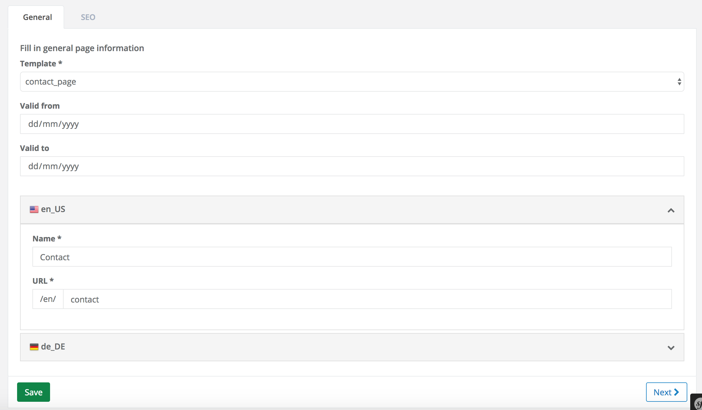
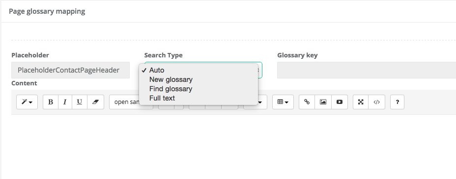
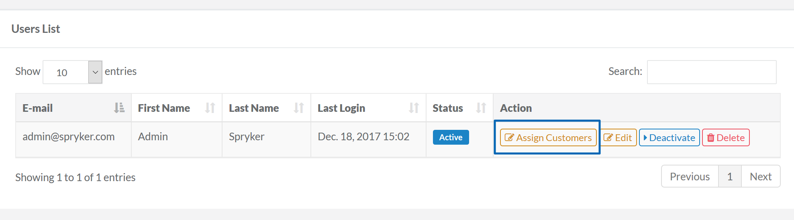
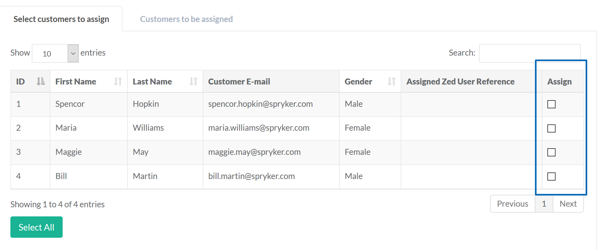
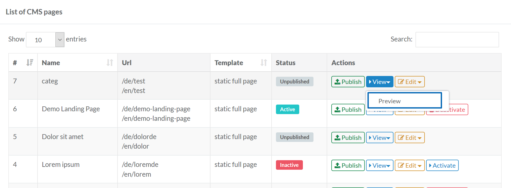
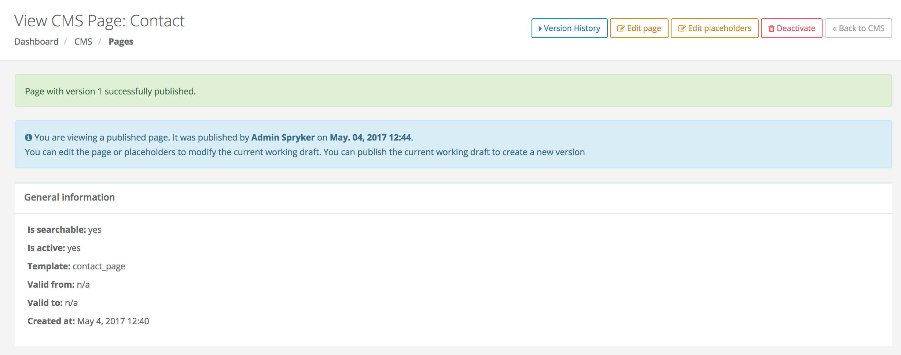

CMS - Creating a New Page
To demonstrate how to add a new page in Yves using the CMS, we will create a page with contact information in the demo shop.
Adding a Template For the New ‘Contact Us’ Page
Create a new Twig template under the src/Pyz/Yves/Cms/Theme/default/template/ folder. We’ll call it contact_page.twig and it will contain the following content:
<h1>CONTACT US </h1>
<div>
<strong> Get in touch </strong>
<br>
<strong>Phone number : </strong> +1 (000) 000-0000
<br>
<strong>Email : </strong> info@companyname.com
<br><br>
<strong> Visit our store </strong><br>
123 Demo Street<br>
Demo City<br>
1234<br>
<br>
</div>Adding Placeholders to Support In-Page Translated Text
In order to have the text translated, add placeholders to the text you want to have translated. The placeholders will be replaced at runtime by the corresponding values of the glossary keys assigned to each of them.
<!-- CMS_PLACEHOLDER : "PlaceholderContactPageHeader" -->
<!-- CMS_PLACEHOLDER : "PlaceholderContactHeader" -->
<!-- CMS_PLACEHOLDER : "PlaceholderPhoneNr" -->
<!-- CMS_PLACEHOLDER : "PlaceholderEmail" -->
<!-- CMS_PLACEHOLDER : "PlaceholderStoreAddress" -->
<h1>{{ spyCms('PlaceholderContactPageHeader') }} </h1>
<div>
<strong>{{ spyCms('PlaceholderContactHeader') }} </strong> <br>
<strong>{{ spyCms('PlaceholderPhoneNr') }} </strong> +1 (000) 000-0000 <br>
<strong>{{ spyCms('PlaceholderEmail') }} </strong> info@companyname.com <br>
<strong>{{ spyCms('PlaceholderStoreAddress') }} </strong><br>
123 Demo Street<br>
Demo City<br>
1234<br>
</div>Creating a Page That Uses the New Template
In Zed, go to CMS -> Pages and click Create CMS Page. From the template dropdown list select the new template and set the corresponding URL for it, as in the example below:

Filling Placeholders For a Page
After you save the new page, the next step would be to assign the real content to each placeholder defined in the template. After hitting save, on the next page you’ll see all the placeholders listed as tabs.
If placeholders are missing, the page cannot be published.
Don’t worry if the glossary keys don’t exist yet; they can be created at this step. As you can see in the picture below, you have 4 ways to assign a glossary key to a placeholder:

Previewing a Page
Before publishing a page, you can preview it. To be able to preview a CMS page, your Zed user needs to be linked to an Yves customer account.
To link a Zed customer to Yves customer, do the following:
- Go to User Control / User.
- Click Assign Customers. 
- At the Assign Customers page in Assign column, select the Yves user(s) that you want to assign to your current admin user. 
- Click Save.
Once you have the necessary customer linked to the Zed user, make sure that you are logged-in in Zed with your Zed account as well as logged-in in Yves with the assigned customer account.
Now you can preview drafts of your CMS pages by navigating to Content Management / Pages / View / Preview.

Publishing a Page
Until now, we created a page and filled all placeholders. However, this page is still a draft and needs to be published.
To publish a page:
Click on the publish button

The page is published and has a version.
You will be redirected to the View CMS Page:

Updating Front-End Data Storage
In order to see the page in Yves, the client data storage (Redis) must be up to date. This is handled through cronjobs.
If you want to execute this step manually, you must run the collectors to update the front-end data storage:
vendor/bin/console collector:storage:exportNow you can see the new page by accessing the URL http://www.de.demoshop.local/contact.
See also:
- Preview Draft Page
- CMS Block
- CMS Glossary
- CMS Versioning
- Defining Maximum Size of Content Fields
- CMS - URL Redirects
Last review date: Sep. 20, 2017